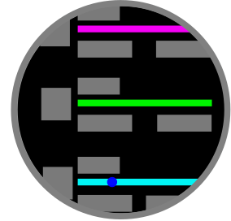

Developing the Concepts
With an understanding of the problem you want to solve and who you are solving it for, you can focus on a design that meets these needs. Now we can begin looking at the important content and workflows to achieve the user’s goals.
App Types
Unlike other platforms, Connect IQ apps have context specific types that define their location in the device interface, as well as their interaction model. The app type you choose should be based on the problem statement of the user. Is your goal to augment the workout experience? You should make a data field. Are you looking to let the user monitor a metric outside of an activity? You should use an app. Does your app have information that updates throughout the day? Add a glance to your device app.
The app type impacts your workflow by placing limits on the potential workflows:
Watch faces and data fields do not take user input, but the user can enter an app-defined settings flow on the device or can edit settings in mobile.
Data fields, with permission from the user, can display alerts if the user achieves a milestone.
Data fields can record additional information into an activity file.
The base page of a widget has limits placed on the inputs to allow user navigation of the carousel. On button products, this is typically done with the up and down buttons.
Watch Faces
Watch faces are the home screen of Garmin wearables. They do not accept direct user input, but they can have settings that are editable within the Connect IQ mobile app. On devices with API level 3.2, watch faces can have a launchable on-device configuration flow.
Data Fields
Data fields are plug-ins that can display information within a Garmin activity. After they are installed, the user can place the data field anywhere within the page loop of their activity. To protect the Garmin experience, data fields aren’t allowed to take input. They can have settings that are editable within the Connect IQ mobile app. On devices with API level 3.2, watch faces can have a launchable on-device configuration flow.
Widgets and Glances
Widgets are a carousel of apps that the user can quickly navigate through. The base page has limited input but can push pages to let the user go deeper for more information. In 2019 Garmin introduced Glances. Glances are a scrollable list of key data, and each list item has a displayable metric. The user can select any glance to dig in further. Both widgets and glances will time out after a period of inactivity.
Widgets
Glances
Audio Content Providers
Audio content providers function as plug-ins to the music player. The user can select them to be their audio source. When the user launches the audio player, they will have access to the media controls that communicate with your app, but the user can perform deeper interactions by going to the media player sub-menu and tapping on your app icon. From here, you can add flows for downloading and managing content and beginning playback.
Device Apps
Device apps are launchable experiences that do not time out. Device apps can take input, manipulate the page stack and communicate with the cloud and with wireless sensors. The user exits them by backing out of the main page. On devices with API level 4.0, you can add a glance for device apps. Examples of device apps include apps that record activities, games and apps that integrate rich content onto the device.

Connect IQ Apps and Information Architecture
Connect IQ apps are typically “information forward,” meaning the key information is presented up front, and there are limited interactions for more information:
Data fields always display the key information. Any customized setup flow requires the user to go to the data field settings.
Widgets should always display the core information on the base page. They can allow the user to enter a flow to see more information.